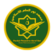

Di Desa Bumisari, Natar, Lampung Selatan, berdiri Pondok Pesantren Nurul Ilmi Qurrata'Ayun Islamic Full Day School & Boarding School. Lembaga ini menawarkan pendidikan terintegrasi bagi santri setingkat TAUD, SD, dan SMP, dengan memadukan kurikulum agama dan umum. Seluruh proses pembelajarannya didasarkan pada akidah yang benar, yaitu Ahlussunah wal Jamaah dengan pemahaman para pendahulu yang saleh (As-Salafush Shalih).
Ma'had Nurul 'Ilmi adalah lembaga pendidikan Islam terpadu yang secara holistik mengembangkan potensi santri, memadukan kurikulum keilmuan agama yang mendalam dengan pendidikan umum yang relevan. Dengan berlandaskan aqidah Ahlus Sunnah wal Jama’ah dan pemahaman As-Salafus Shalih, Ma’had ini berkomitmen mencetak generasi Qur’ani yang tidak hanya unggul dalam hafalan dan pemahaman Al-Qur’an, tetapi juga berakhlak karimah, disiplin, cerdas, serta mampu berkontribusi positif bagi umat dan bangsa. Selain fokus pada tahfidz, bahasa Arab, dan ilmu syar’i, Ma’had juga memberikan pembekalan ilmu pengetahuan umum serta program keterampilan hidup (life skill) seperti perkebunan, peternakan, teknik, hingga kewirausahaan. Dengan sistem pendidikan yang terpadu dan lingkungan yang islami, Ma’had Nurul ’Ilmi bertekad melahirkan generasi yang kuat dalam iman, kokoh dalam ilmu, dan terampil dalam amal.
Semua Berada Di Dalam Menu Utama